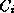
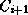
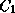

Common Lisp the Language, 2nd Edition

Topological sorting proceeds by finding a class C in  such
that no other class precedes that element according to the elements
in R. The class C is placed first in the result.
Remove C from , and remove all pairs of the form
(C, D),
, from R. Repeat the process, adding
classes with no predecessors to the end of the result. Stop when no
element can be found that has no predecessor.
such
that no other class precedes that element according to the elements
in R. The class C is placed first in the result.
Remove C from , and remove all pairs of the form
(C, D),
, from R. Repeat the process, adding
classes with no predecessors to the end of the result. Stop when no
element can be found that has no predecessor.
If is not empty and the process has stopped, the set R is
inconsistent. If every class in the finite set of classes is preceded
by another, then R contains a loop. That is, there is a chain of
classes
such that  precedes
, 1 <= i < n,
and precedes .
Sometimes there are several classes from with no
predecessors. In this case select the one that has a direct
subclass rightmost in the class precedence list computed so far.
If there is no
such candidate class, R does not generate a partial ordering - the
 ,
,  , are inconsistent.
, are inconsistent.
In more precise terms, let ,
m >= 2, be
the classes from with no predecessors. Let , n >= 1, be the class precedence list
constructed so far. is the most specific class, and  is the least specific. Let 1 <= j <= n be the largest number
such that there exists an i where 1 <= i <= m and
is a direct superclass of ;
is placed next.
is the least specific. Let 1 <= j <= n be the largest number
such that there exists an i where 1 <= i <= m and
is a direct superclass of ;
is placed next.
The effect of this rule for selecting from a set of classes with no
predecessors is that classes in a simple superclass chain are
adjacent in the class precedence list and that classes in each
relatively separated subgraph are adjacent in the class
precedence list. For example, let  and be subgraphs
whose only element in common is the class J. Suppose
that no superclass of J appears in either or .
Let be the bottom of ; and let
and be subgraphs
whose only element in common is the class J. Suppose
that no superclass of J appears in either or .
Let be the bottom of ; and let  be the
bottom of . Suppose C is a class whose direct superclasses
are and in that order; then the class precedence
list for C will start with C and will be followed by all classes
in except J. All the classes of will be next.
The class J and its superclasses will appear last.
be the
bottom of . Suppose C is a class whose direct superclasses
are and in that order; then the class precedence
list for C will start with C and will be followed by all classes
in except J. All the classes of will be next.
The class J and its superclasses will appear last.